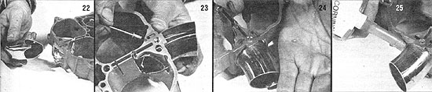

[22] Clip the drainpipe to form a contoured ""fishmouth "". [23] Place the pipe in position, then drill a 1/8"" hole through the carb body's upper gasket surface (between the two oblong holes as shown) and the wall of the pipe beneath. Countersink the bore 3/32 inch with a 5/16"" bit in preparation for installing a 1/8"" X 3/8"" countersunk pop rivet. [24] Fasten the pipe to the carb body and check to make sure the rivet's head is flush with (or below) the gasket surface, then knockout the small nailhead left in the rivet with a 1/16"" pin punch. [25] Seal the joint between the pipe and the carburetor body with silicone compound